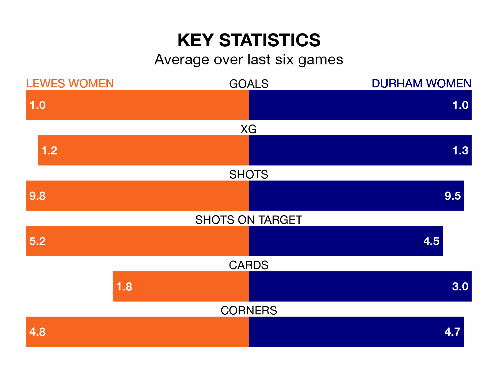

Struggling Lewes Women face Durham Women at the Dripping Pan on Sunday looking to build on a win in their last league outing.
After securing all three points with a 2-1 victory over London City Lionesses on November 19, Lewes sit 11th in the FA Women's Championship.
They travel to play a Durham side sixth in the standings, who also won their last match, 1-0 against Southampton Women, on December 17.
In the last 10 years, Lewes and Durham have played each other on 10 occasions. Durham won eight of them and they drew twice.
On average, Lewes scored 0.3 goals and Durham 2.1 in those matches.
Their last meeting was on September 3, when Durham won 2-0 at home.
Lewes are in disappointing form in the FA Women's Championship, with two wins and four losses from their last six games.
With three wins and three losses over that period, Durham's form is better – they have taken nine points from 18, compared to the home team's six.
With seven goals in 11 games so far this season, Lewes are the league's lowest scorers with 0.6 goals per game. And they are conceding more than average, letting in 18 goals at a rate of 1.6 per game.
The visitors are also below average scorers, with 1.0 goal per game, compared to a league average of 1.4. They have conceded 1.7 goals per game.
Updated: 10:02 (UTC), 19/01/24